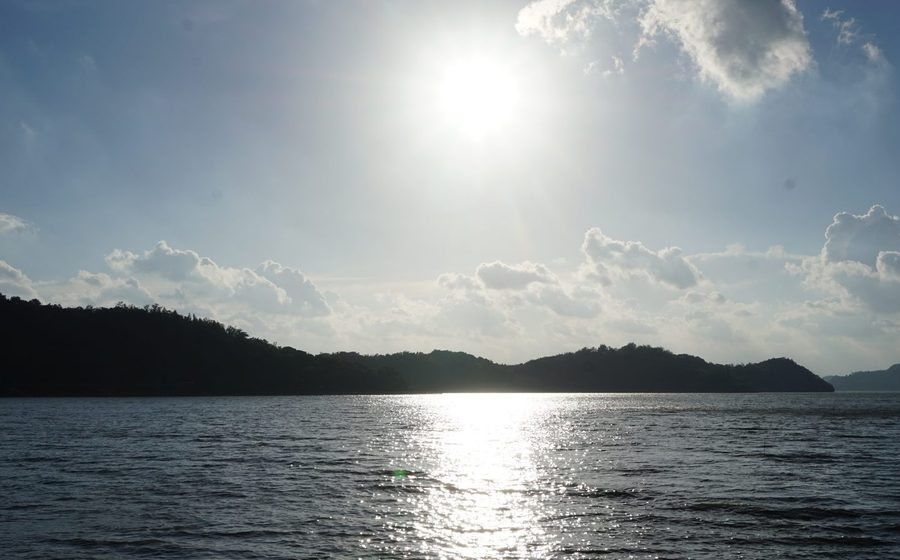
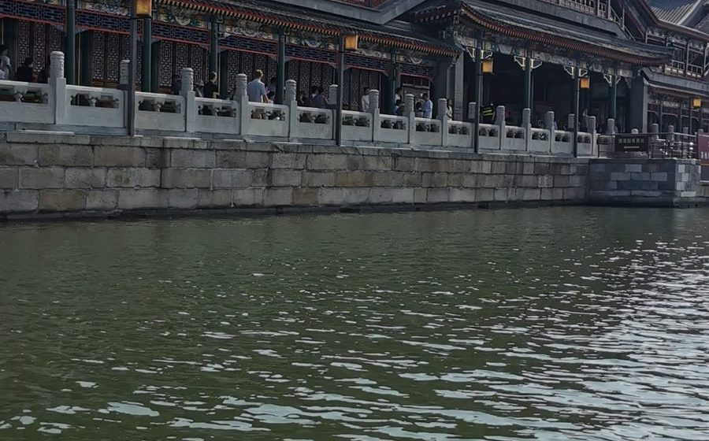
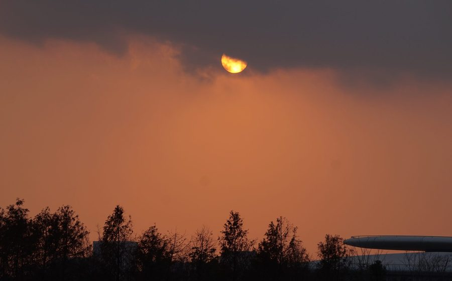
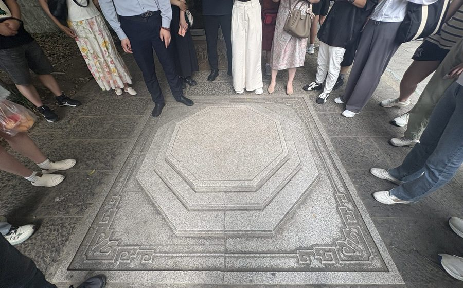
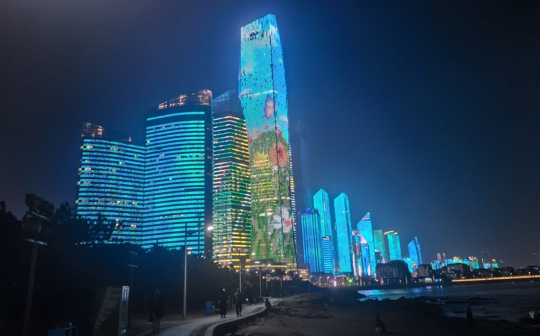
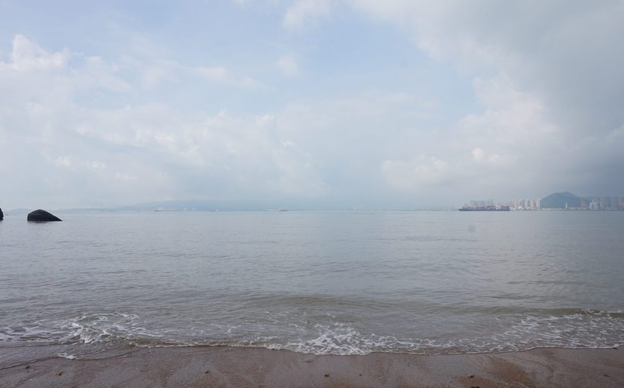
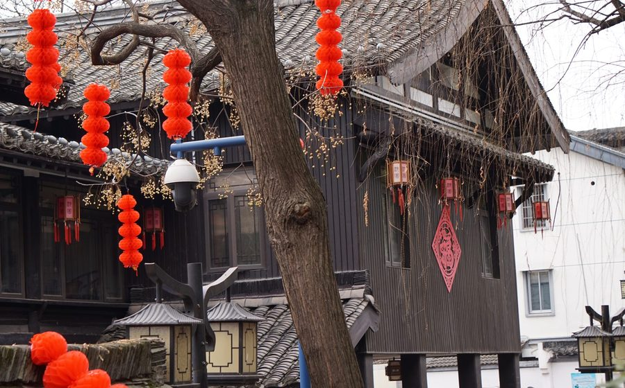
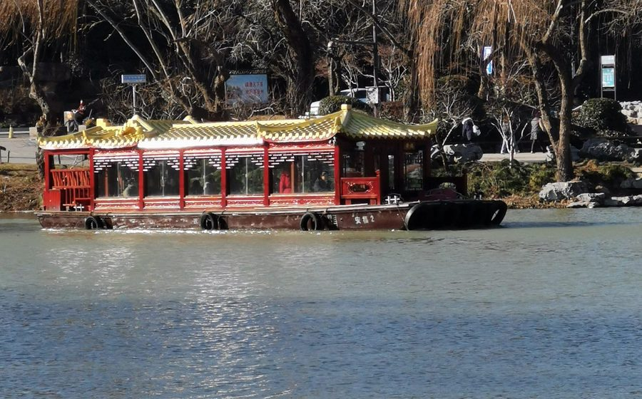

旅行
走过的路线、去过的城市、路上的故事，都记在这里。

风雨里的宁波
从晴空到台风“白海豚”过境——天童寺的蓝天、天一阁的四百年、东钱湖的风浪，以及杭州湾跨海大桥上的苍茫。一场台风，看见一座城如何被守护。
天童寺
天一阁
东钱湖
杭州湾跨海大桥
台风“白海豚”

京城夏日
七月初的北京，晴天多、游客也多。这次在故宫的红墙金瓦、北海的湖光塔影和圆明园的断壁残垣之间走了几天，找了些没有游人的角落按下快门。
故宫
北海
圆明园
颐和园
城市夜景

滴水湖寻暖
二月的滴水湖，风还带着冬意。湖边看飞机起落、等落日把水面染成蜜糖色，夜里还有零星的烟花落在湖面上。
滴水湖
日落
烟花
飞机
湖面倒影

南京一程
六月末的南京，闷热里带着历史的厚重。一日之间走过秦淮河上的石桥、老城墙下的水门，还有深巷里的青砖灰瓦。
秦淮河
夫子庙
老门东
古城墙
江南
森迪部落动物记
南通的森迪部落是一座可以和动物住在一起的树屋度假区。两天里，小熊猫在走廊上走来走去，环尾狐猴在树上张望，水豚泡在水里发呆。
森迪部落
小熊猫
动物园
亲子
树屋

青岛冬日
一月的青岛，海风凛冽但阳光清澈。在海边等一场日落，看城市亮起蓝紫色的灯光，再去海洋馆里看白鲸和鲸鲨缓缓游过。
青岛
海滨
海洋馆
日落
城市夜景

厦门听海
八月的厦门，暑气蒸腾但海风吹得人清醒。南普陀寺的塔影、植物园的绿意、海边的沙滩，还有水族馆里幽蓝的光，组成了这趟三日小旅行。
南普陀寺
植物园
海滩
水族馆
闽南

绍兴年味
春节里的绍兴，老街挂满红灯笼，空气里飘着腊梅香。在东湖看石壁映水，在沈园读陆游与唐琬的旧事，再坐乌篷船穿过一座又一座石桥。
绍兴
东湖
沈园
乌篷船
腊梅

扬州慢时光
一月的扬州，瘦西湖边柳枝还未发芽。走过东关街的石板路，穿过个园的竹林与假山，在白塔和五亭桥下看鸭子游过平静的湖面。
瘦西湖
个园
东关街
五亭桥
白塔